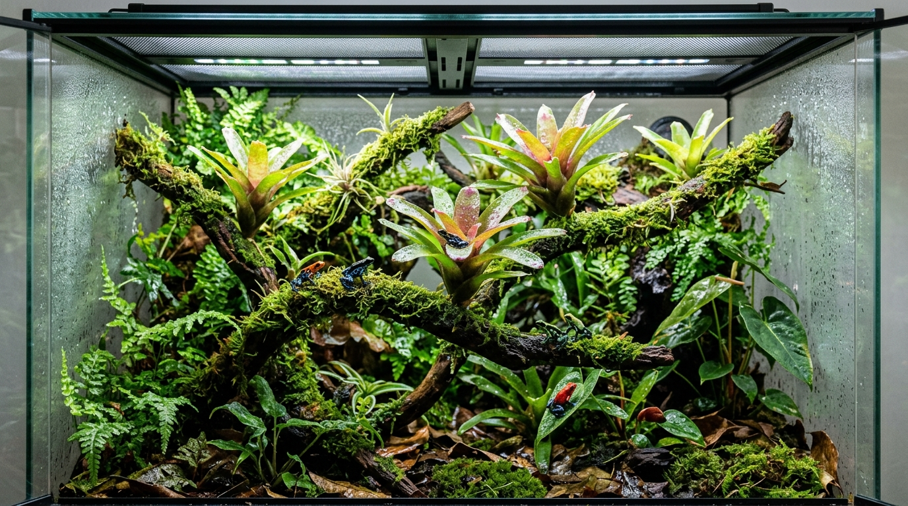

● Kondisi Optimal
TANK_ID #01 • 90 × 45 × 90 cm
Amazonian Understory
Bioma kanopi hutan hujan tropis Amazonia. Habitat katak panah beracun (Ranitomeya) dan liana shingling.
25.2°C
Suhu
88%
Kelembapan
4,200
Lux LED
🌿 Kanopi / Epifit
Marcgravia & Bromelia
🍂 Serasah Daun Oak
Isopoda & Collembola
🌱 Substrat ABG Mix
pH 6.4 • Mikoriza Aktif
🕸️ Mesh Barrier
Pemisah Anti-Sumbat
💧 False Bottom LECA
Air Drainase: 2.1 cm